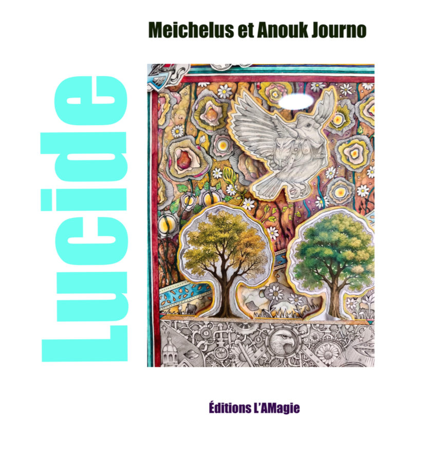
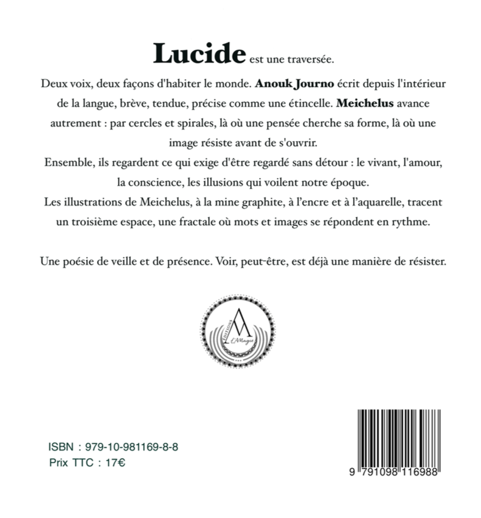
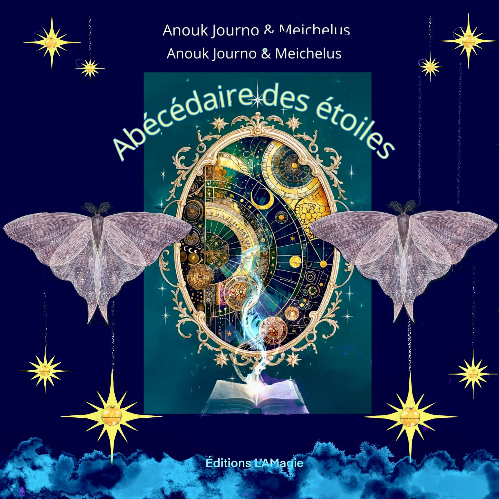
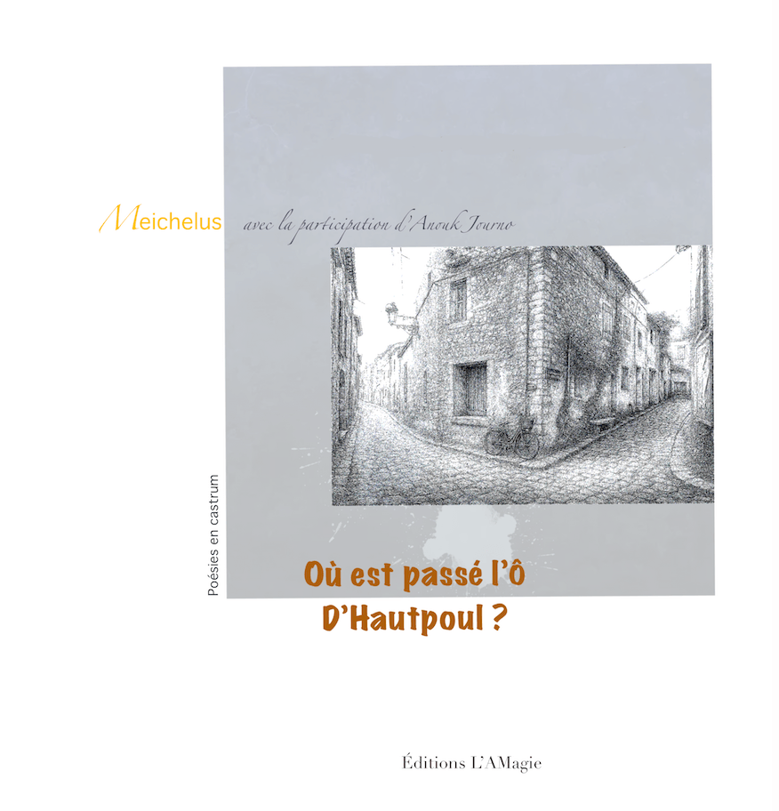
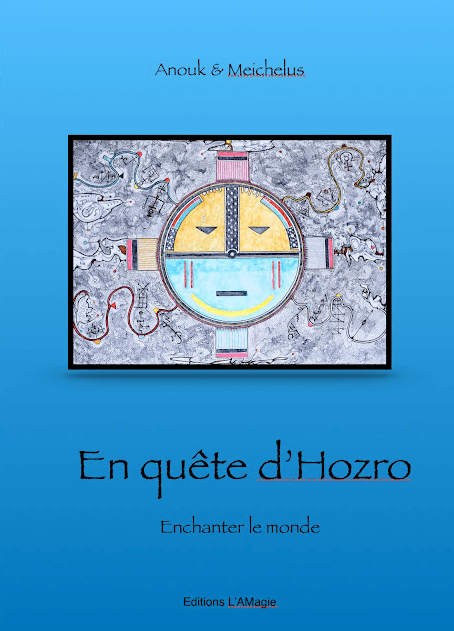
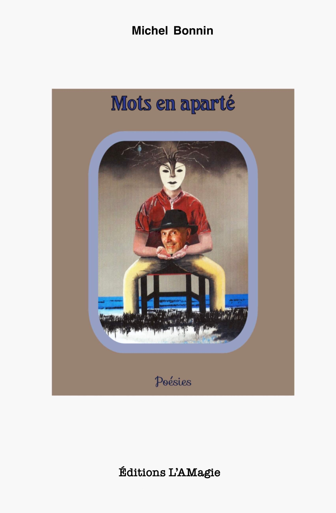

La poésie, c’est… Mais qu’est-ce qui « fait poésie » ? Chaque être humain sensible, à l’écoute, déployant ses antennes multisensorielles, déclinera ses propositions de définition.
Sauf que la poésie ne se définit pas… Jamais. Elle est confinée, figée, dans les quelques lignes du dictionnaire. Elle ne respire plus. Elle a besoin de sortir des pages, des cadres, tout en offrant à nos sens déployés une expérience unique, des griseries intenses ou douces, des baumes sous différentes formes, des aiguillons également — aiguillons pour inciter au décalage, à une certaine révolte, une quête de tranquillité profonde, une soif d’authenticité.
La poésie, c’est…
Un instant
Un son
Un espace
Des ailes qui se défroissent
Des silences qui font des vagues
Et pour vous ? Pour toi ?
L’esprit de la collection
Précis comme un haïku, ouvert comme une porte
L’esprit sera celui du haïku, sans qu’il s’agisse forcément de haïku. Des poèmes plutôt courts, denses, riches de sens, ouvrant sur les portes du Monde.
Végétaux, plantes, saisons, éléments naturels, animaux de toutes sortes, insectes, oiseaux… Nous les appelons dans nos poèmes. Nous les choyons. Nos peaux les aiment.
❋
Lucide
Meichelus & Anouk Journo


Recueil co-créé avec illustrations graphite et aquarelle. Précis comme un trait, intense comme la nuit.
🐎
L’Âme en selle / Riding Soul
Anouk Journo
Poésie bilingue français-anglais — le galop, la liberté, l’âme qui chevauche au-delà des frontières.
Acheter L’Âme en selle
⭐
Abécédaire des étoiles
Anouk Journo

Nouveau recueil — Un livre né au pied de la Montagne Noire, écrit à quatre mains avec Anouk Journo & Michel Foucher (Meichelus).
Un abécédaire poétique où chaque lettre devient une respiration, une émotion, un fragment de vie.
✨ Chaque poème est accompagné d'une illustration originale de Michel Foucher (Meichelus). Une vraie conversation entre les mots et le dessin, entre l'intime et le paysage, entre l'amour et la lumière du quotidien. L'Abécédaire des Étoiles est bien plus qu'un simple recueil alphabétique. C'est une cartographie poétique du cœur et de l'âme, où chaque lettre devient un point lumineux dans le ciel.
Écrit avec Anouk Journo et illustré par Meichelus, ce recueil révèle la conversation secrète entre les mots et l'image, le visible et l'invisible. Chaque page est une respiration, chaque poème une étoile qui guide le lecteur dans les chemins intérieurs.
Un livre qui se lit comme on marche : doucement, en laissant les étoiles montrer la route.
Format papier & ebook
🌊
Où est passé l’Ô d’Hautpoul
Anouk Journo

Un recueil poétique qui interroge les mystères d'un lieu, d'une voix perdue, d'une âme en quête.
L'Ô d'Hautpoul — cette prononciation particulière, ce secret du terroir — devient métaphore d'une absence, d'une énigme que les poèmes tentent de résoudre sans jamais vraiment y parvenir. Où est passé l'Ô d'Hautpoul ? La question elle-même est énigmatique, presque magique. Elle évoque un lieu, une légende, une voix qui s'est perdue dans le temps.
Ce recueil explore les territoires du silence et de l'absence. Chaque poème est une tentative de retrouver ce qui s'est échappé, de nommer l'innommable, de donner voix à ce qui reste muet.
Un voyage poétique où le mystère n'est jamais résolu, mais où la quête elle-même devient source de beauté et de sens.
Acheter L’Ô d’Hautpoul
🌿
En quête d’Hozro
Anouk Journo

Un beau-livre associant 20 poèmes et 20 peintures — une conversation intime entre la parole et l’image.
Anouk Journo & Meichelus explorent ensemble les territoires d’Hozro, ce monde imaginaire où la poésie devient peinture, où chaque couleur chante un poème.
2024 — Une quête visuelle et poétique vers l’ailleurs. En Quête d’Hozro est bien plus qu’un recueil. C’est une invitation à voyager vers un monde où les frontières entre la poésie et la peinture s’effacent.
Chaque page révèle une conversation silencieuse entre les mots d’Anouk Journo et les pinceaux de Meichelus. Les poèmes deviennent tableaux, les peintures murmurent des vers oubliés.
Hozro — ce nom même évoque l’énigme, le voyage sans fin, la quête permanente de beauté et de sens. Un monde où l’enchantement du monde se vit au fil des pages. Pour en savoir plus
Nous écrire pour ce recueil
✒
Mots en aparté
Michel Bonnin

Poésie et peinture s’y répondent dans un même souffle, portées par une écriture intime, sensible, nourrie par la course, le rêve et son énergie de vie communicative. Un ouvrage singulier, à l’image de son auteur — poète, peintre… et champion. Michel Bonnin explore dans ce recueil les territoires de l’intime — là où la poésie et la peinture se rencontrent, se dialoguent, s’entrelacent.
Chaque page révèle une dualité poétique : les mots dansent avec les pinceaux, la course de l’athlète se transforme en rêve du poète, l’énergie vitale s’exprime par des confidences murmurées.
Mots en Aparté est une invitation à ralentir, à écouter les voix secrètes qui habitent chacun d’entre nous, à voir le monde à travers le double regard de l’artiste. Des mots en aparté qui se chuchotent à l’oreille, entre confidences poétiques et visions picturales.
Acheter Mots en aparté